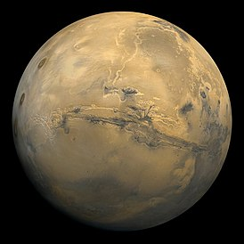

Марс — четвёртая по удалённости от Солнца и седьмая по размеру планета Солнечной системы; масса планеты составляет 10,7 % массы Земли.» Названа в честь Марса — древнеримского бога войны, соответствующего древнегреческому Аресу.Иногда Марс называют «красной планетой» из-за красноватого оттенка поверхности, придаваемого ей минералом маггемитом — γ-оксидом железа(III).
Марс — планета земной группы с разреженной атмосферой (давление на поверхности в 160 раз меньше земного).Особенностями поверхностного рельефа Марса можно считать ударные кратеры наподобие лунных, а также вулканы, долины, пустыни и полярные ледниковые шапки наподобие земных.
У Марса есть два естественных спутника — Фобос и Деймос (в переводе с древнегреческого — «страх» и «ужас», имена двух сыновей Ареса, сопровождавших его в бою), которые относительно малы (Фобос — 26,8×22,4×18,4 км, Деймос — 15×12,2×10,4 км) и имеют неправильную форму.

Главное